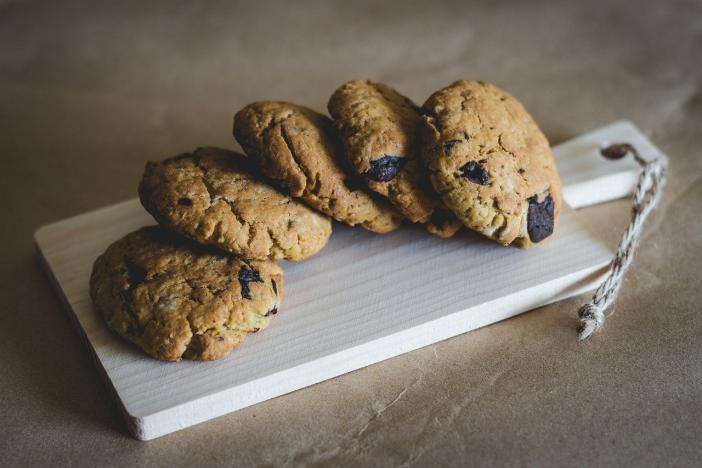

Recettes de cookies
Recette pour 6 personnes !

Ingrédients
- 1 oeuf
- 85g de sucre
- 85g de beurre
- 150g de farine
- 100g de pépites de chocolat
- 1 sachet de sucre vanillé
- 1 cuillère à café de levure chimique
- 1/2 cuillère à café de sel
Préparation
- Laissez ramollir le beurre à température ambiante. Dans un saladier, malaxez-le avec le sucre.
- Ajoutez l'oeuf et éventuellement le sucre vanillé.
- Versez progressivement la farine, la levure chimique, le sel et, les pépites de chocolat. Mélangez bien.
- Beurrez une plaque allant au four ou recouvrez-la d'une plaque de silicone. A l'aide de 2 cuillères......
- Faire cuire 8 à 10 minutes...